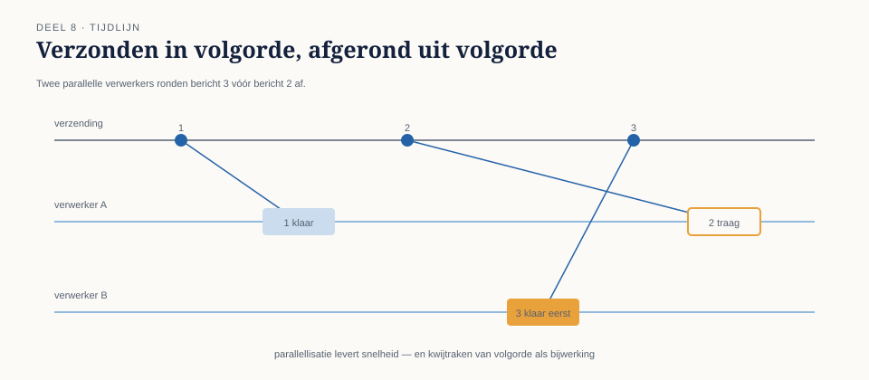
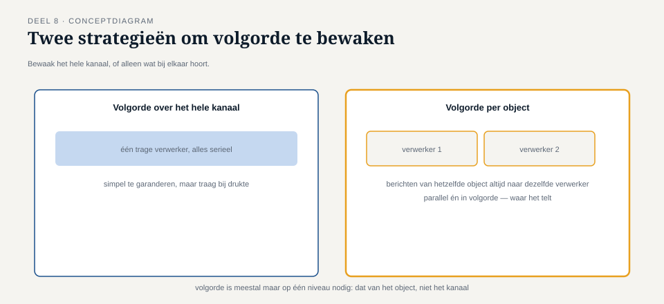

Deel 8 — Betrouwbaarheid II: volgorde en guaranteed delivery
Reader · Ductus-cursus Enterprise Integration Patterns · niveau 1 (fundament) · deel 8 van 10
8.0 Een adres dat drie keer veranderde, in de verkeerde volgorde
Een werkgever diende binnen twee minuten drie opeenvolgende adreswijzigingen in voor dezelfde deelnemer — een typefout, gecorrigeerd, en toen nog een keer gecorrigeerd omdat het huisnummer verkeerd bleek. Elk van de drie was, individueel bekeken, een volkomen geldig, idempotent command: "stel adres in op X". Precies het soort operatie dat deel 7 aanraadt.
Het probleem ontstond niet door duplicatie maar door volgorde. Het mutatiekanaal was, om de doorvoersnelheid te verhogen, ingericht met meerdere parallelle verwerkers die elk berichten van het kanaal oppikken zodra ze beschikbaar zijn. Bij normale belasting maakte dat niets uit — de drie berichten kwamen ruim uit elkaar aan en werden keurig op volgorde verwerkt. Op het moment van dit incident was er echter een tijdelijke piekbelasting, en de derde (en laatste, correcte) adreswijziging werd door een snellere verwerker opgepikt en afgerond vóórdat de tweede, door een tragere verwerker, klaar was. Het eindresultaat: het tweede, foutieve adres stond in KERN, niet het derde en correcte.
Dit is een ander probleem dan deel 7 behandelde. Idempotentie beschermt tegen een dúbbel bericht met hetzelfde effect als één keer. Het beschermt niet tegen twee verschíllende berichten die, in de verkeerde volgorde uitgevoerd, een ander eindresultaat opleveren dan bedoeld.

8.1 Wanneer volgorde er wel toe doet, en wanneer niet
Niet elke reeks berichten heeft een gegarandeerde volgorde nodig — het onnodig afdwingen van volgorde kost doorvoersnelheid (parallelle verwerking wordt immers juist ingezet om sneller te zijn dan één verwerker die alles na elkaar afhandelt). De vraag die eerst beantwoord moet worden: zijn opeenvolgende berichten over hetzelfde object commutatief, of niet?
Commutatief betekent: het eindresultaat is hetzelfde ongeacht de volgorde waarin de berichten worden toegepast. Twee losse mutaties op verschillende deelnemers zijn per definitie commutatief ten opzichte van elkaar — ze raken elkaar niet. Maar drie opeenvolgende adreswijzigingen op dezelfde deelnemer zijn dat expliciet niet: het eindresultaat hangt volledig af van welke van de drie het laatst wordt toegepast.
Kernzin 8 van de cursus: volgorde doet er alleen toe binnen de grens van hetzelfde object — bewaak volgorde per deelnemer, per polis, per entiteit, nooit over het hele kanaal in het algemeen.
Dit onderscheid is essentieel omdat het de oplossing bepaalt. Volgorde over het hele kanaal afdwingen (alle berichten strikt na elkaar, door precies één verwerker) is een zware maatregel die de belangrijkste reden voor parallelle verwerking — doorvoersnelheid — grotendeels tenietdoet. Volgorde per object afdwingen is veel goedkoper, en is ook precies wat nodig is: het maakt niet uit of de adreswijziging van deelnemer 00482 wordt verwerkt vóór of ná een salarismutatie van deelnemer 00913, zolang de drie berichten die specifiek bij 00482 horen, in de juiste volgorde blijven.

8.2 Hoe volgorde per object technisch geborgd wordt
Het gangbare mechanisme om volgorde per object te bewaren zonder alle parallellie op te geven, is: berichten die tot hetzelfde object behoren, worden consistent naar dezelfde verwerker geleid — bijvoorbeeld door het deelnemersnummer te gebruiken als partitioneringssleutel. Zo blijft parallellie mogelijk over verschillende deelnemers, terwijl berichten van dezelfde deelnemer altijd door dezelfde verwerker, in de volgorde van binnenkomst, worden afgehandeld.
Dit deel gaat toolneutraal om met de precieze implementatie (partitionering, sequencing, of andere technologiespecifieke mechanismen komen in de Toolbijlage aan bod), maar het ontwerpprincipe is universeel: kies een partitioneringssleutel die samenvalt met de grens waarbinnen volgorde ertoe doet. Bij Meridiaan is dat het deelnemersnummer — niet het mutatietype (dat was juist de routeringssleutel uit deel 4, een andere beslissing met een ander doel) en niet een willekeurige technische sleutel zoals een verzendtijdstip.
Een tweede, aanvullend mechanisme is expliciete sequencing: elk bericht krijgt, naast zijn bericht-ID, een oplopend volgnummer binnen de scope van het object waarop het betrekking heeft. De ontvanger kan dan, zelfs als berichten toch buiten volgorde aankomen, detecteren dat er een gat is en een bericht met een lager volgnummer dan het laatst verwerkte negeren of in een wachtrij zetten totdat het juiste moment komt. Dit is zwaarder om te bouwen dan partitionering alleen, en wordt in de praktijk vooral ingezet als extra vangnet bovenop partitionering, niet als vervanging ervan.
8.3 Guaranteed delivery: de andere kant van betrouwbaarheid
Naast volgorde behandelt dit deel een tweede, verwant vraagstuk: guaranteed delivery — de garantie dat een bericht, eenmaal succesvol op een kanaal geplaatst, niet meer verloren kan gaan, ook niet bij een crash van de infrastructuur zelf tussen plaatsing en aflevering.
Dit klinkt als een herhaling van de leveringsgaranties uit deel 7 (at-least-once versus at-most-once), maar het is een aanvullende, infrastructurele eis: at-least-once zegt iets over wat er gebeurt bij het versturen (blijft de zender proberen totdat er een bevestiging is); guaranteed delivery zegt iets over wat er gebeurt nadat het bericht al is aangenomen door het kanaal — blijft het daar veilig bewaard, ook als de broker zelf herstart of tijdelijk uitvalt, totdat een ontvanger het daadwerkelijk heeft opgehaald en verwerkt?
Zonder guaranteed delivery kan een bericht dat succesvol is geplaatst (de zender heeft dus al een bevestiging ontvangen en stopt met retryen) alsnog verloren gaan door een storing aan de kant van het kanaal zelf — een situatie die voor de zender onzichtbaar is, want die denkt dat de klus geklaard is. Dit maakt guaranteed delivery een randvoorwaarde die los van, maar aanvullend op, de leveringsgarantie van deel 7 moet worden geregeld — meestal door het kanaal zelf zodanig in te richten dat berichten persistent (op schijf, niet alleen in geheugen) worden opgeslagen totdat ze bevestigd zijn afgeleverd.
Bij Meridiaan is dit een expliciete infrastructurele eis geworden na een test waarbij, tijdens een geplande herstart van de broker, een klein aantal in-transit berichten bleek te zijn verdwenen — berichten die door de zender al als "verstuurd en bevestigd" werden beschouwd. De oplossing lag niet in het messaging-ontwerp zelf, maar in de configuratie van het kanaal: persistente opslag inschakelen, ten koste van enige doorvoersnelheid.
Vuistregel: leveringsgarantie (deel 7) beschermt de reis van zender naar kanaal; guaranteed delivery beschermt het verblijf ín het kanaal, tot aan de ontvanger.
8.4 Terug naar het adresincident
Met partitionering op deelnemersnummer als oplossing werd het incident van 8.0 structureel onmogelijk: de drie adreswijzigingen van dezelfde deelnemer worden nu altijd door dezelfde verwerker afgehandeld, in de volgorde van binnenkomst — een piekbelasting kan de verwerking van andere deelnemers versnellen of vertragen, maar raakt de interne volgorde van één deelnemer niet meer.
Deze oplossing kostte iets: de doorvoersnelheid voor mutaties van een enkele, zeer actieve werkgever (met veel mutaties voor verschillende deelnemers, allemaal via één partitioneringssleutel als het per ongeluk op werkgeverniveau in plaats van deelnemerniveau was gepartitioneerd) zou kunnen dalen als de sleutelkeuze verkeerd was gevallen. Vandaar het belang van de juiste sleutelkeuze in 8.2: partitioneer op de grens waarbinnen volgorde ertoe doet, niet fijnmaziger of grover dan nodig.
Samenvatting van deel 8
- Idempotentie (deel 7) beschermt tegen een dubbel bericht met hetzelfde effect; het beschermt niet tegen twee verschillende berichten die in de verkeerde volgorde tot een ander eindresultaat leiden.
- Volgorde doet er alleen toe binnen de grens van hetzelfde object — bewaak volgorde per deelnemer, per polis, per entiteit, niet over het hele kanaal.
- Het gangbare mechanisme: partitioneer berichten naar dezelfde verwerker op basis van een sleutel die samenvalt met die grens; sequencing is een aanvullend vangnet.
- Guaranteed delivery is een aparte, infrastructurele eis: het beschermt het verblijf van een bericht ín het kanaal, na aanname en vóór aflevering — los van de leveringsgarantie die de reis van zender naar kanaal beschrijft.
Vooruitblik
Deel 9 sluit niveau 1 inhoudelijk af met foutafhandeling: wat gebeurt er met een bericht dat de ontvanger niet kan verwerken, ook niet na een retry — het dead letter channel en het invalid message channel, en waarom stille verdwijning van een bericht de slechtste van alle uitkomsten is.